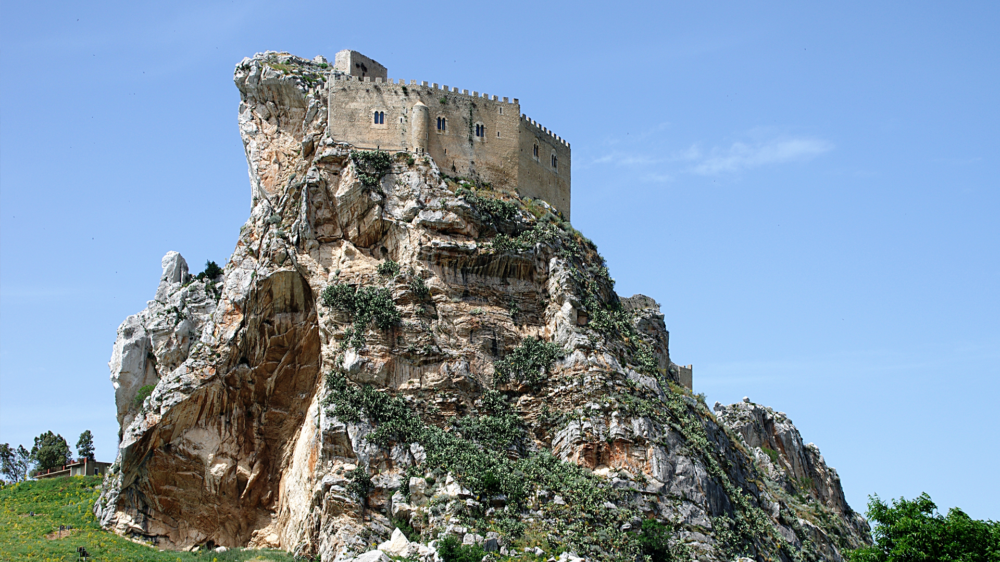

CASTELLO MANFREDONICO
La fortezza tra le nuvole
Arroccato su una rupe calcarea a quasi 800 metri di altezza nel pittoresco borgo di Mussomeli, questo maestoso castello del XIV secolo è uno degli esempi più straordinari di architettura militare in Sicilia, fondendosi quasi per magia con la nuda roccia.